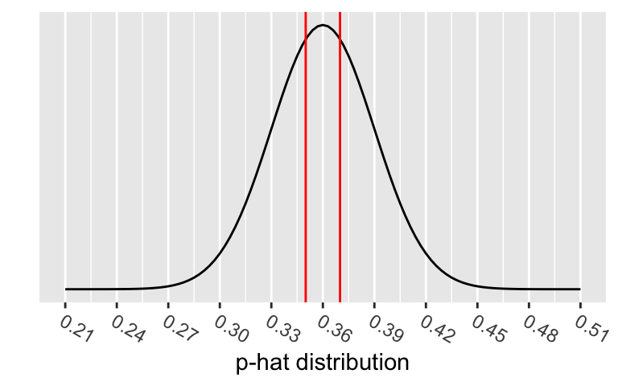
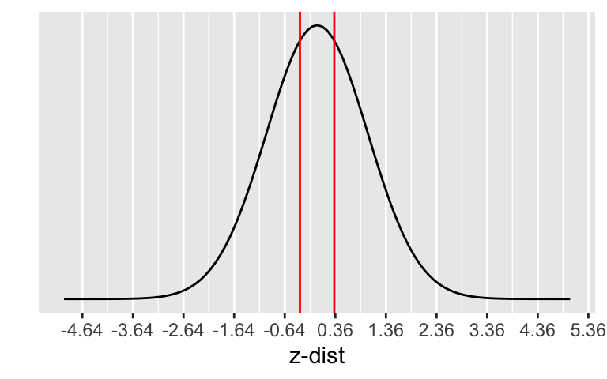
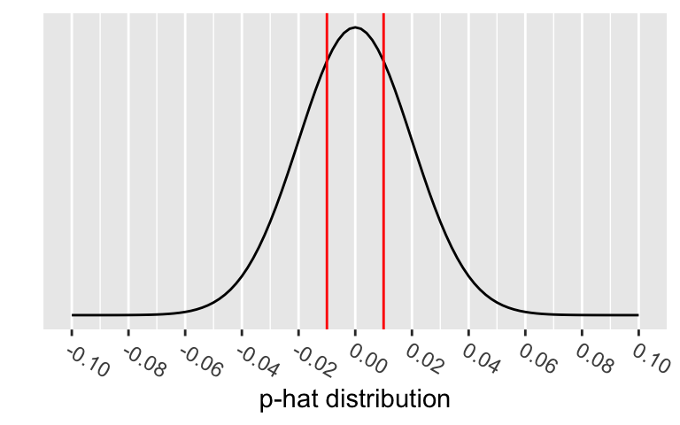
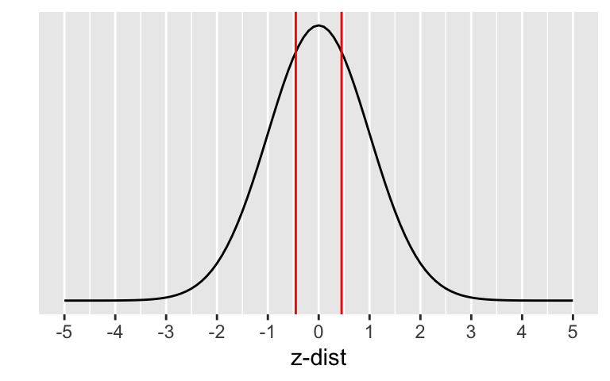

Code
# run these every time you open Rstudio
library(tidyverse)
library(oibiostat)
library(janitor)
library(rstatix)
library(knitr)
library(gtsummary)
library(moderndive)
library(gt)
library(broom)
library(here)
library(pwr) # new-ishBSTA 511/611
Meike Niederhausen, PhD
OHSU-PSU School of Public Health
November 12, 2025
With code folding we can hide or show the code in the html output by clicking on the Code buttons in the html file.
Note the </> Code button on the top right of the html output.
See the new options in the yaml above (in the .qmd file).
code-fold: show code-tools: true source: repo
See more information at https://quarto.org/docs/output-formats/html-code.html#folding-code
CI’s and hypothesis tests for different scenarios:
\[\text{point estimate} \pm z^*(or~t^*)\cdot SE,~~\text{test stat} = \frac{\text{point estimate}-\text{null value}}{SE}\]
| Day | Book | Population parameter |
Symbol | Point estimate | Symbol | SE |
|---|---|---|---|---|---|---|
| 10 | 5.1 | Pop mean | \(\mu\) | Sample mean | \(\bar{x}\) | \(\frac{s}{\sqrt{n}}\) |
| 10 | 5.2 | Pop mean of paired diff | \(\mu_d\) or \(\delta\) | Sample mean of paired diff | \(\bar{x}_{d}\) | \(\frac{s_d}{\sqrt{n}}\) |
| 11 | 5.3 | Diff in pop means |
\(\mu_1-\mu_2\) | Diff in sample means |
\(\bar{x}_1 - \bar{x}_2\) | \(\sqrt{\frac{s_1^2}{n_1} + \frac{s_2^2}{n_2}}\) or pooled |
| 12 | 8.1 | Pop proportion | \(p\) | Sample prop | \(\widehat{p}\) | ??? |
| 12 | 8.2 | Diff in pop proportions |
\(p_1-p_2\) | Diff in sample proportions |
\(\widehat{p}_1-\widehat{p}_2\) | ??? |
Sampling distribution for a proportion or difference in proportions
What are \(H_0\) and \(H_a\)?
What are the SE’s for \(\hat{p}\) and \(\hat{p}_1-\hat{p}_2\)?
Hypothesis test
Confidence Interval
How are the SE’s different for a hypothesis test & CI?
How to run proportions tests in R
Power & sample size for proportions tests (extra material)
One proportion
Two proportions
Barnes GM, Welte JW, Hoffman JH, Tidwell MC. Comparisons of gambling and alcohol use among college students and noncollege young people in the United States. J Am Coll Health. 2010 Mar-Apr;58(5):443-52. doi: 10.1080/07448480903540499. PMID: 20304756; PMCID: PMC4104810.
Set the level of significance \(\alpha\)
Specify the null ( \(H_0\) ) and alternative ( \(H_A\) ) hypotheses
Calculate the test statistic.
Calculate the p-value based on the observed test statistic and its sampling distribution
Write a conclusion to the hypothesis test
Null and alternative hypotheses in words and in symbols.
One sample test
\(H_0\): The population proportion of young male college students that participated in sports betting in the previous year is 0.36.
\(H_A\): The population proportion of young male college students that participated in sports betting in the previous year is not 0.36.
\[\begin{align} H_0:& p = 0.36\\ H_A:& p \neq 0.36\\ \end{align}\]
Two samples test
\(H_0\): The difference in population proportions of young male college and noncollege students that participated in sports betting in the previous year is 0.
\(H_A\): The difference in population proportions of young male college and noncollege students that participated in sports betting in the previous year is not 0.
\[\begin{align} H_0:& p_{coll} - p_{noncoll} = 0\\ H_A:& p_{coll} - p_{noncoll} \neq 0\\ \end{align}\]
\[Bin(n,p) \rightarrow N\Big(\mu = np, \sigma = \sqrt{np(1-p)} \Big)\]
\[\hat{p} \sim N\Big(\mu_{\hat{p}} = p, \sigma_{\hat{p}} = \sqrt{\frac{p(1-p)}{n}} \Big)\]
Sampling distribution of \(\hat{p}\) if we assume \(H_0: p=p_0\) is true:
\[\hat{p} \sim N\Big(\mu_{\hat{p}} = p, \sigma_{\hat{p}} = \sqrt{\frac{p(1-p)}{n}} \Big) \sim N\Big( \mu_{\hat{p}}=p_0, \sigma_{\hat{p}}=\sqrt{\frac{p_0\cdot(1-p_0)}{n}} \Big)\]
Test statistic for a one sample proportion test:
\[ \text{test stat} = \frac{\text{point estimate}-\text{null value}}{SE} = z_{\hat{p}} = \frac{\hat{p} - p_0}{\sqrt{\frac{p_0\cdot(1-p_0)}{n}}} \]
Example: A 2010 study found that out of 269 male college students, 35% had participated in sports betting in the previous year.
What is the test statistic when testing \(H_0: p=0.36\) vs. \(H_A: p \neq 0.36\)?
[1] 94.15[1] 0.3494424[1] 0.02926612[1] -0.3607455\[\begin{align} z_{\hat{p}} &= \frac{94/269 - 0.36}{\sqrt{\frac{0.36\cdot(1-0.36)}{269}}} \\ & -0.3607455 \end{align}\]
Conditions:
Example: A 2010 study found that out of 269 male college students, 35% had participated in sports betting in the previous year.
Testing \(H_0: p=0.36\) vs. \(H_A: p \neq 0.36\).
Are the conditions satisfied?
The p-value is the probability of obtaining a test statistic just as extreme or more extreme than the observed test statistic assuming the null hypothesis \(H_0\) is true.


Calculate the p-value:
\[\begin{align} 2 &\cdot P(\hat{p}<0.35) \\ &= 2 \cdot P\Big(Z_{\hat{p}} < \frac{94/269 - 0.36}{\sqrt{\frac{0.36\cdot(1-0.36)}{269}}}\Big)\\ &=2 \cdot P(Z_{\hat{p}} < -0.3607455)\\ &= 0.7182897 \end{align}\]
\[\begin{align} H_0:& p = 0.36\\ H_A:& p \neq 0.36\\ \end{align}\]
Conclusion statement:
What to use for SE in CI formula?
\[\hat{p} \pm z^* \cdot SE_{\hat{p}}\]
Sampling distribution of \(\hat{p}\):
\[\hat{p} \sim N\Big(\mu_{\hat{p}} = p, \sigma_{\hat{p}} = \sqrt{\frac{p(1-p)}{n}} \Big)\]
Problem: We don’t know what \(p\) is - it’s what we’re estimating with the CI.
Solution: approximate \(p\) with \(\hat{p}\):
\[SE_{\hat{p}} = \sqrt{\frac{\hat{p}(1-\hat{p})}{n}}\]
Example: A 2010 study found that out of 269 male college students, 35% had participated in sports betting in the previous year.
Find the 95% CI for the population proportion.
\[\begin{align} 94/269 &\pm 1.96 \cdot SE_{\hat{p}}\\ SE_{\hat{p}} &= \sqrt{\frac{(94/269)(1-94/269)}{269}} \end{align}\]
Interpretation:
We are 95% confident that the (population) proportion of young male college students that participated in sports betting in the previous year is in (0.29, 0.41).
Hypothesis test conditions
\[n_1 p_0 \ge 10, \ \ n_1(1-p_0)\ge 10\]
Confidence interval conditions
\[n_1\hat{p}_1 \ge 10, \ \ n_1(1-\hat{p}_1)\ge 10\]
\[\hat{p}_1 - \hat{p}_2 \sim N \Big(\mu_{\hat{p}_1 - \hat{p}_2} = p_1 - p_2, ~~ \sigma_{\hat{p}_1 - \hat{p}_2} = \sqrt{ \frac{p_1\cdot(1-p_1)}{n_1} + \frac{p_2\cdot(1-p_2)}{n_2}} \Big)\]
where \(p_1\) & \(p_2\) are the population proportions, respectively.
Sampling distribution of \(\hat{p}_1 - \hat{p}_2\): \[\hat{p}_1 - \hat{p}_2 \sim N \Big(\mu_{\hat{p}_1 - \hat{p}_2} = p_1 - p_2, ~~ \sigma_{\hat{p}_1 - \hat{p}_2} = \sqrt{ \frac{p_1\cdot(1-p_1)}{n_1} + \frac{p_2\cdot(1-p_2)}{n_2}} \Big)\]
Since we assume \(H_0: p_1 - p_2 = 0\) is true, we “pool” the proportions of the two samples to calculate the SE:
\[\text{pooled proportion} = \hat{p}_{pool} = \dfrac{\text{total number of successes} }{ \text{total number of cases}} = \frac{x_1+x_2}{n_1+n_2}\]
Test statistic:
\[ \text{test statistic} = z_{\hat{p}_1 - \hat{p}_2} = \frac{\hat{p}_1 - \hat{p}_2 - 0}{\sqrt{\frac{\hat{p}_{pool}\cdot(1-\hat{p}_{pool})}{n_1} + \frac{\hat{p}_{pool}\cdot(1-\hat{p}_{pool})}{n_2}}} \]
\[ \text{test statistic} = z_{\hat{p}_1 - \hat{p}_2} = \frac{\hat{p}_1 - \hat{p}_2 - 0}{\sqrt{\frac{\hat{p}_{pool}\cdot(1-\hat{p}_{pool})}{n_1} + \frac{\hat{p}_{pool}\cdot(1-\hat{p}_{pool})}{n_2}}} \]
\[\text{pooled proportion} = \hat{p}_{pool} = \dfrac{\text{total number of successes} }{ \text{total number of cases}} = \frac{x_1+x_2}{n_1+n_2}\]
Example: A 2010 study found that out of 269 male college students, 35% had participated in sports betting in the previous year, and out of 214 noncollege young males 36% had.
What is the test statistic when testing \(H_0: p_{coll} - p_{noncoll} = 0\) vs. \(H_A: p_{coll} - p_{noncoll} \neq 0\)?
\[\begin{align} z_{\hat{p}_1 - \hat{p}_2} &= \frac{94/269 - 77/214-0}{\sqrt{0.354\cdot(1-0.354)(\frac{1}{269}+\frac{1}{214})}}\\ &=-0.2367497 \end{align}\]
Conditions:
Example: A 2010 study found that out of 269 male college students, 35% had participated in sports betting in the previous year, and out of 214 noncollege young males 36% had.
Testing \(H_0: p_{coll} - p_{noncoll} = 0\) vs. \(H_A: p_{coll} - p_{noncoll} \neq 0\)? .
Are the conditions satisfied?
The p-value is the probability of obtaining a test statistic just as extreme or more extreme than the observed test statistic assuming the null hypothesis \(H_0\) is true.


Calculate the p-value:
\[\begin{align} 2 &\cdot P(\hat{p}_1 - \hat{p}_2<0.35-0.36) \\ &= 2 \cdot P\Big(Z_{\hat{p}_1 - \hat{p}_2} < \\ &\frac{94/269 - 77/214-0}{\sqrt{0.354\cdot(1-0.354)(\frac{1}{269}+\frac{1}{214})}}\Big)\\ &=2 \cdot P(Z_{\hat{p}} < -0.2367497) \end{align}\]
\[\begin{align} H_0:& p_{coll} - p_{noncoll} = 0\\ H_A:& p_{coll} - p_{noncoll} \neq 0\\ \end{align}\]
Conclusion statement:
What to use for SE in CI formula?
\[\hat{p}_1 - \hat{p}_2 \pm z^* \cdot SE_{\hat{p}_1 - \hat{p}_2}\]
SE in sampling distribution of \(\hat{p}_1 - \hat{p}_2\)
\[\sigma_{\hat{p}_1 - \hat{p}_2} = \sqrt{ \frac{p_1\cdot(1-p_1)}{n_1} + \frac{p_2\cdot(1-p_2)}{n_2}} \]
Problem: We don’t know what \(p\) is - it’s what we’re estimating with the CI.
Solution: approximate \(p_1\), \(p_2\) with \(\hat{p}_1\), \(\hat{p}_2\):
\[SE_{\hat{p}_1 - \hat{p}_2} = \sqrt{ \frac{\hat{p}_1\cdot(1-\hat{p}_1)}{n_1} + \frac{\hat{p}_2\cdot(1-\hat{p}_2)}{n_2}}\]
Example: A 2010 study found that out of 269 male college students, 35% had participated in sports betting in the previous year, and out of 214 noncollege young males 36% had. Find the 95% CI for the difference in population proportions.
\[\frac{94}{269} - \frac{77}{214} \pm 1.96 \cdot SE_{\hat{p}_1 - \hat{p}_2}\]
\[\begin{align} & SE_{\hat{p}_1 - \hat{p}_2}=\\ & \sqrt{ \frac{94/269 \cdot (1-94/269)}{269} + \frac{77/214 \cdot (1-77/214)}{214}} \end{align}\]
Interpretation:
We are 95% confident that the difference in (population) proportions of young male college and noncollege students that participated in sports betting in the previous year is in (-0.127, 0.106).
Hypothesis test conditions
Confidence interval conditions
prop.test(x, n, p = NULL,
alternative = c("two.sided", "less", "greater"),
conf.level = 0.95,
correct = TRUE)
x = vector with counts of “successes”n = vector with sample size in each groupx = table() of dataset“1-prop z-test”
Example: A 2010 study found that out of 269 male college students, 35% had participated in sports betting in the previous year.
Test \(H_0: p=0.36\) vs. \(H_A: p \neq 0.36\)?
[1] 94.15
1-sample proportions test without continuity correction
data: 94 out of 269, null probability 0.36
X-squared = 0.13014, df = 1, p-value = 0.7183
alternative hypothesis: true p is not equal to 0.36
95 percent confidence interval:
0.2949476 0.4081767
sample estimates:
p
0.3494424 Can tidy() test output:
Since we don’t have a dataset, we first need to create a dataset based on the results:
“out of 269 male college students, 35% had participated in sports betting in the previous year”
[1] 94.15Rows: 269
Columns: 1
$ Coll <chr> "Bet", "Bet", "Bet", "Bet", "Bet", "Bet", "Bet", "Bet", "Bet", "B… Coll n percent
Bet 94 0.3494424
NotBet 175 0.6505576R code for proportions test requires input as a base R table:
prop.test requires the input x to be a tablen since the table already includes all needed information.
1-sample proportions test without continuity correction
data: table(SportsBet1$Coll), null probability 0.36
X-squared = 0.13014, df = 1, p-value = 0.7183
alternative hypothesis: true p is not equal to 0.36
95 percent confidence interval:
0.2949476 0.4081767
sample estimates:
p
0.3494424 Compare output with summary stats method:
| estimate | statistic | p.value | parameter | conf.low | conf.high | method | alternative |
|---|---|---|---|---|---|---|---|
| 0.3494424 | 0.1301373 | 0.7182897 | 1 | 0.2949476 | 0.4081767 | 1-sample proportions test without continuity correction | two.sided |
| estimate | statistic | p.value | parameter | conf.low | conf.high | method | alternative |
|---|---|---|---|---|---|---|---|
| 0.3494424 | 0.1301373 | 0.7182897 | 1 | 0.2949476 | 0.4081767 | 1-sample proportions test without continuity correction | two.sided |
| estimate | statistic | p.value | parameter | conf.low | conf.high | method | alternative |
|---|---|---|---|---|---|---|---|
| 0.3494424 | 0.08834805 | 0.7662879 | 1 | 0.2931841 | 0.4100774 | 1-sample proportions test with continuity correction | two.sided |
Differences are small when sample sizes are large.
“2-prop z-test”
Example: A 2010 study found that out of 269 male college students, 35% had participated in sports betting in the previous year, and out of 214 noncollege young males 36% had. Test \(H_0: p_{coll} - p_{noncoll} = 0\) vs. \(H_A: p_{coll} - p_{noncoll} \neq 0\).
[1] 94.15[1] 77.04NmbrBet <- c(94, 77) # vector for # of successes in each group
TotalNmbr <- c(269, 214) # vector for sample size in each group
prop.test(x = NmbrBet, # x is # of successes in each group
n = TotalNmbr, # n is sample size in each group
alternative = "two.sided", # 2-sided alternative
correct = FALSE) # no continuity correction
2-sample test for equality of proportions without continuity correction
data: NmbrBet out of TotalNmbr
X-squared = 0.05605, df = 1, p-value = 0.8129
alternative hypothesis: two.sided
95 percent confidence interval:
-0.09628540 0.07554399
sample estimates:
prop 1 prop 2
0.3494424 0.3598131 Since we don’t have a dataset, we first need to create a dataset based on the results:
“out of 269 male college students, 35% had participated in sports betting in the previous year, and out of 214 noncollege young males 36% had”
[1] 94.15[1] 77.04Rows: 483
Columns: 2
$ Group <chr> "College", "College", "College", "College", "College", "College"…
$ Bet <chr> "yes", "yes", "yes", "yes", "yes", "yes", "yes", "yes", "yes", "… Group no yes
College 175 94
NonCollege 137 77R code for proportions test requires input as a base R table:
prop.test requires the input x to be a tablen since the table already includes all needed information.
2-sample test for equality of proportions without continuity correction
data: table(SportsBet2$Group, SportsBet2$Bet)
X-squared = 0.05605, df = 1, p-value = 0.8129
alternative hypothesis: two.sided
95 percent confidence interval:
-0.07554399 0.09628540
sample estimates:
prop 1 prop 2
0.6505576 0.6401869 Compare output with summary stats method:
| estimate1 | estimate2 | statistic | p.value | parameter | conf.low | conf.high | method | alternative |
|---|---|---|---|---|---|---|---|---|
| 0.3494424 | 0.3598131 | 0.05605044 | 0.8128509 | 1 | -0.0962854 | 0.07554399 | 2-sample test for equality of proportions without continuity correction | two.sided |
| estimate1 | estimate2 | statistic | p.value | parameter | conf.low | conf.high | method | alternative |
|---|---|---|---|---|---|---|---|---|
| 0.6505576 | 0.6401869 | 0.05605044 | 0.8128509 | 1 | -0.07554399 | 0.0962854 | 2-sample test for equality of proportions without continuity correction | two.sided |
| estimate1 | estimate2 | statistic | p.value | parameter | conf.low | conf.high | method | alternative |
|---|---|---|---|---|---|---|---|---|
| 0.6505576 | 0.6401869 | 0.01987511 | 0.8878864 | 1 | -0.07973918 | 0.1004806 | 2-sample test for equality of proportions with continuity correction | two.sided |
Differences are small when sample sizes are large.
\[n=p(1-p)\left(\frac{z_{1-\alpha/2}+z_{1-\beta}}{p-p_0}\right)^2\]
[1] 17856.2[1] 17857We would need a sample size of at least 17,857!
Conversely, we can calculate how much power we had in our example given the sample size of 269.
\[1-\beta= \Phi\left(z-z_{1-\alpha/2}\right)+\Phi\left(-z-z_{1-\alpha/2}\right) \quad ,\quad \text{where } z=\frac{p-p_0}{\sqrt{\frac{p(1-p)}{n}}}\]
\(\Phi\) is the probability for a standard normal distribution
[1] -0.343863[1] 0.06365242If the population proportion is 0.35 instead of 0.36, we only have a 6.4% chance of correctly rejecting \(H_0\) when the sample size is 269.
pwr for power analysesSpecify all parameters except for the one being solved for.
One proportion
pwr.p.test(h = NULL, n = NULL, sig.level = 0.05, power = NULL, alternative = c("two.sided","less","greater"))
pwr.2p.test(h = NULL, n = NULL, sig.level = 0.05, power = NULL, alternative = c("two.sided","less","greater"))
pwr.2p2n.test(h = NULL, n1 = NULL, n2 = NULL, sig.level = 0.05, power = NULL, alternative = c("two.sided", "less","greater"))
\(h\) is the effect size, and calculated using an arcsine transformation:
\[h = \text{ES.h(p1, p2)} = 2\arcsin(\sqrt{p_1})-2\arcsin(\sqrt{p_2})\]
See PASS documentation for
pwr: sample size for one proportion testpwr.p.test(h = NULL, n = NULL, sig.level = 0.05, power = NULL, alternative = c("two.sided","less","greater"))
h = ES.h(p1, p2)
p1 and p2 are the two proportions being testedSpecify all parameters except for the sample size:
proportion power calculation for binomial distribution (arcsine transformation)
h = 0.02089854
n = 17971.09
sig.level = 0.05
power = 0.8
alternative = two.sidedpwr: power for one proportion testpwr.p.test(h = NULL, n = NULL, sig.level = 0.05, power = NULL, alternative = c("two.sided","less","greater"))
h = ES.h(p1, p2)
p1 and p2 are the two proportions being testedSpecify all parameters except for the power:
proportion power calculation for binomial distribution (arcsine transformation)
h = 0.02089854
n = 269
sig.level = 0.05
power = 0.06356445
alternative = two.sidedpwr: sample size for two proportions testpwr.2p.test(h = NULL, n = NULL, sig.level = 0.05, power = NULL, alternative = c("two.sided","less","greater"))
h = ES.h(p1, p2); p1 and p2 are the two proportions being testedSpecify all parameters except for the sample size:
Difference of proportion power calculation for binomial distribution (arcsine transformation)
h = 0.02089854
n = 35942.19
sig.level = 0.05
power = 0.8
alternative = two.sided
NOTE: same sample sizesNote: \(n\) in output is the number per sample!
pwr: power for two proportions testpwr.2p2n.test(h = NULL, n1 = NULL, n2 = NULL, sig.level = 0.05, power = NULL, alternative = c("two.sided", "less","greater"))
h = ES.h(p1, p2); p1 and p2 are the two proportions being testedSpecify all parameters except for the power:
difference of proportion power calculation for binomial distribution (arcsine transformation)
h = 0.02089854
n1 = 214
n2 = 269
sig.level = 0.05
power = 0.05598413
alternative = two.sided
NOTE: different sample sizesNote: \(n\) in output is the number per sample!
CI’s and hypothesis tests for different scenarios:
\[\text{point estimate} \pm z^*(or~t^*)\cdot SE,~~\text{test stat} = \frac{\text{point estimate}-\text{null value}}{SE}\]
| Day | Book | Population parameter |
Symbol | Point estimate | Symbol | SE |
|---|---|---|---|---|---|---|
| 10 | 5.1 | Pop mean | \(\mu\) | Sample mean | \(\bar{x}\) | \(\frac{s}{\sqrt{n}}\) |
| 10 | 5.2 | Pop mean of paired diff | \(\mu_d\) or \(\delta\) | Sample mean of paired diff | \(\bar{x}_{d}\) | \(\frac{s_d}{\sqrt{n}}\) |
| 11 | 5.3 | Diff in pop means |
\(\mu_1-\mu_2\) | Diff in sample means |
\(\bar{x}_1 - \bar{x}_2\) | \(\sqrt{\frac{s_1^2}{n_1} + \frac{s_2^2}{n_2}}\) or pooled |
| 12 | 8.1 | Pop proportion | \(p\) | Sample prop | \(\widehat{p}\) | \(\sqrt{\frac{p(1-p)}{n}}\) |
| 12 | 8.2 | Diff in pop proportions |
\(p_1-p_2\) | Diff in sample proportions |
\(\widehat{p}_1-\widehat{p}_2\) | \(\sqrt{\frac{p_1\cdot(1-p_1)}{n_1} + \frac{p_2\cdot(1-p_2)}{n_2}}\) |
---
title: "Day 12: Inference for a single proportion or difference of two (independent) proportions (Sections 8.1-8.2)"
subtitle: "BSTA 511/611"
pagetitle: "Day 12 BSTA 511/611"
author: "Meike Niederhausen, PhD"
institute: "OHSU-PSU School of Public Health"
date: "11/12/2025"
categories: ["Week 7"]
format:
html:
link-external-newwindow: true
toc: true
code-fold: show
code-tools: true
source: repo
execute:
echo: true
freeze: auto # re-render only when source changes
# editor: visual
editor_options:
chunk_output_type: console
---
```{r}
#| label: "setup"
#| include: false
knitr::opts_chunk$set(echo = TRUE, fig.height=3, fig.width=5, message = F)
```
## Load packages
* Packages need to be loaded _every time_ you restart R or render an Qmd file
```{r}
# run these every time you open Rstudio
library(tidyverse)
library(oibiostat)
library(janitor)
library(rstatix)
library(knitr)
library(gtsummary)
library(moderndive)
library(gt)
library(broom)
library(here)
library(pwr) # new-ish
```
- You can check whether a package has been loaded or not
- by looking at the Packages tab and
- seeing whether it has been checked off or not
## MoRitz's tip of the day: [code folding]{style="color:darkorange"}
* With code folding we can hide or show the code in the html output by clicking on the `Code` buttons in the html file.
* Note the `</> Code` button on the top right of the html output.
* See the new options in the yaml above (in the .qmd file).
>code-fold: show
code-tools: true
source: repo
See more information at <https://quarto.org/docs/output-formats/html-code.html#folding-code>
## Where are we?
CI's and hypothesis tests for different scenarios:
$$\text{point estimate} \pm z^*(or~t^*)\cdot SE,~~\text{test stat} = \frac{\text{point estimate}-\text{null value}}{SE}$$
Day | Book | Population <br> parameter | Symbol | Point estimate | Symbol | SE
--|--|--|--|--|--|--
10 | 5.1 | Pop mean | $\mu$ | Sample mean | $\bar{x}$ | $\frac{s}{\sqrt{n}}$
10 | 5.2 | Pop mean of paired diff | $\mu_d$ or $\delta$ | Sample mean of paired diff | $\bar{x}_{d}$ | **$\frac{s_d}{\sqrt{n}}$**
11 | 5.3 | [Diff in pop <br> means]{style="color:black"} | [$\mu_1-\mu_2$]{style="color:black"} | [Diff in sample <br> means]{style="color:black"} | [$\bar{x}_1 - \bar{x}_2$]{style="color:black"} | [**$\sqrt{\frac{s_1^2}{n_1} + \frac{s_2^2}{n_2}}$ or pooled**]{style="color:black"}
12 | 8.1 | [Pop proportion]{style="color:green"} | [$p$]{style="color:green"} | [Sample prop]{style="color:green"} | [$\widehat{p}$]{style="color:green"} | [**???**]{style="color:red"}
12 | 8.2 | [Diff in pop <br> proportions]{style="color:green"} | [$p_1-p_2$]{style="color:green"} | [Diff in sample <br> proportions]{style="color:green"} | [$\widehat{p}_1-\widehat{p}_2$]{style="color:green"} | [**???**]{style="color:red"}
## Goals for today (Sections 8.1-8.2)
* Statistical inference for a single proportion or the difference of two (independent) proportions
1. Sampling distribution for a proportion or difference in proportions
1. What are $H_0$ and $H_a$?
1. What are the SE's for $\hat{p}$ and $\hat{p}_1-\hat{p}_2$?
1. Hypothesis test
1. Confidence Interval
1. How are the SE's different for a hypothesis test & CI?
1. How to run proportions tests in R
1. Power & sample size for proportions tests (extra material)
# Motivating example
__One proportion__
* A 2010 study found that out of 269 male college students, 35% had participated in sports betting in the previous year.
* What is the CI for the proportion?
* The study also reported that 36% of noncollege young males had participated in sports betting. Is the proportion for male college students different from 0.36?
__Two proportions__
* There were 214 men in the sample of noncollege young males (36% participated in sports betting in the previous year).
* Compare the difference in proportions between the college and noncollege young males.
* CI & Hypothesis test
Barnes GM, Welte JW, Hoffman JH, Tidwell MC. [Comparisons of gambling and alcohol use among college students and noncollege young people in the United States](https://www.tandfonline.com/doi/full/10.1080/07448480903540499?journalCode=vach20). J Am Coll Health. 2010 Mar-Apr;58(5):443-52. doi: 10.1080/07448480903540499. PMID: 20304756; PMCID: PMC4104810.
## Steps in a Hypothesis Test
1. Set the __[level of significance]{style="color:darkorange"}__ $\alpha$
1. Specify the __[null]{style="color:darkorange"}__ ( $H_0$ ) and __[alternative]{style="color:darkorange"}__ ( $H_A$ ) __[hypotheses]{style="color:darkorange"}__
1. In symbols
1. In words
1. Alternative: one- or two-sided?
1. Calculate the __[test statistic]{style="color:darkorange"}__.
1. Calculate the __[p-value]{style="color:darkorange"}__ based on the observed test statistic and its sampling distribution
1. Write a __[conclusion]{style="color:darkorange"}__ to the hypothesis test
1. Do we reject or fail to reject $H_0$?
1. Write a conclusion in the context of the problem
# Step 2: Null & Alternative Hypotheses
Null and alternative hypotheses in __words__ and in __symbols__.
__One sample test__
* $H_0$: The population proportion of young male college students that participated in sports betting in the previous year is 0.36.
* $H_A$: The population proportion of young male college students that participated in sports betting in the previous year is not 0.36.
\begin{align}
H_0:& p = 0.36\\
H_A:& p \neq 0.36\\
\end{align}
__Two samples test__
* $H_0$: The difference in population proportions of young male college and noncollege students that participated in sports betting in the previous year is 0.
* $H_A$: The difference in population proportions of young male college and noncollege students that participated in sports betting in the previous year is not 0.
\begin{align}
H_0:& p_{coll} - p_{noncoll} = 0\\
H_A:& p_{coll} - p_{noncoll} \neq 0\\
\end{align}
# One proportion inference
## Sampling distribution of $\hat{p}$
* $\hat{p}=\frac{X}{n}$ where $X$ is the number of "successes" and $n$ is the sample size.
* $X \sim Bin(n,p)$, where $p$ is the population proportion.
* For $n$ "big enough", the normal distribution can be used to approximate a binomial distribution:
$$Bin(n,p) \rightarrow N\Big(\mu = np, \sigma = \sqrt{np(1-p)} \Big)$$
* Since $\hat{p}=\frac{X}{n}$ is a linear transformation of $X$, we have for large n:
$$\hat{p} \sim N\Big(\mu_{\hat{p}} = p, \sigma_{\hat{p}} = \sqrt{\frac{p(1-p)}{n}} \Big)$$
* [*How we apply this result to CI's and test statistics is different!!!*]{style="color:purple"}
## Step 3: Test statistic
Sampling distribution of $\hat{p}$ if we assume $H_0: p=p_0$ is true:
$$\hat{p} \sim N\Big(\mu_{\hat{p}} = p, \sigma_{\hat{p}} = \sqrt{\frac{p(1-p)}{n}} \Big)
\sim N\Big(
\mu_{\hat{p}}=p_0, \sigma_{\hat{p}}=\sqrt{\frac{p_0\cdot(1-p_0)}{n}}
\Big)$$
Test statistic for a one sample proportion test:
$$
\text{test stat} = \frac{\text{point estimate}-\text{null value}}{SE}
= z_{\hat{p}} = \frac{\hat{p} - p_0}{\sqrt{\frac{p_0\cdot(1-p_0)}{n}}}
$$
<hr>
__Example:__ A 2010 study found that out of 269 male college students, 35% had participated in sports betting in the previous year.
<br>
What is the test statistic when testing $H_0: p=0.36$ vs.
$H_A: p \neq 0.36$?
```{r}
p0 <- 0.36
n <- 269
n*.35
(ph <- 94/n)
(SEp <- sqrt(p0*(1-p0)/n))
(zp <- (ph-p0)/SEp)
```
\begin{align}
z_{\hat{p}} &= \frac{94/269 - 0.36}{\sqrt{\frac{0.36\cdot(1-0.36)}{269}}} \\
& `r zp`
\end{align}
## Step "3b": Conditions satisfied?
__Conditions__:
1. _Independent observations_
* The observations were collected independently.
1. The number of __expected successes and expected failures is at least 10__.
* $n_1 p_0 \ge 10, \ \ n_1(1-p_0)\ge 10$
<hr>
__Example:__ A 2010 study found that out of 269 male college students, 35% had participated in sports betting in the previous year.
<br>
Testing $H_0: p=0.36$ vs. $H_A: p \neq 0.36$.
<br>
Are the conditions satisfied?
## Step 4: p-value
The __[p-value]{style="color:darkorange"}__ is the __probability__ of obtaining a test statistic _just as extreme or more extreme_ than the observed test statistic assuming the null hypothesis $H_0$ is true.
```{r}
#| fig.width: 4
#| fig.height: 2.5
#| echo: false
# specify upper and lower bounds of shaded region below
mu <- 0.36
std <- 0.03
# The following figure is only an approximation of the
# sampling distribution since I used a normal instead
# of t-distribution to make it.
ggplot(data.frame(x = c(mu-5*std, mu+5*std)), aes(x = x)) +
stat_function(fun = dnorm,
args = list(mean = mu, sd = std)) +
scale_y_continuous(breaks = NULL) +
scale_x_continuous(breaks=c(mu, mu - 0.03*(1:5), mu + 0.03*(1:5))) +
theme(axis.text.x=element_text(angle = -30, hjust = 0)) +
labs(y = "",
x = "p-hat distribution") +
geom_vline(xintercept = c(0.35, 0.37),
color = "red")
```
```{r}
#| fig.height: 2.5
#| fig.width: 4
#| echo: false
ggplot(data = data.frame(x = c(-5, 5)), aes(x)) +
stat_function(fun = dnorm,
args = list(mean = 0, sd = 1)) +
ylab("") +
xlab("z-dist") +
scale_y_continuous(breaks = NULL) +
scale_x_continuous(breaks=c(mu, mu - (1:5), mu + (1:5))) +
geom_vline(xintercept = c(-0.34, 0.34),
color = "red")
```
Calculate the _p_-value:
\begin{align}
2 &\cdot P(\hat{p}<0.35) \\
&= 2 \cdot P\Big(Z_{\hat{p}} < \frac{94/269 - 0.36}{\sqrt{\frac{0.36\cdot(1-0.36)}{269}}}\Big)\\
&=2 \cdot P(Z_{\hat{p}} < -0.3607455)\\
&= `r 2*pnorm(-0.3607455)`
\end{align}
```{r}
2*pnorm(-0.3607455)
```
## Step 5: Conclusion to hypothesis test
\begin{align}
H_0:& p = 0.36\\
H_A:& p \neq 0.36\\
\end{align}
* Recall the $p$-value = 0.7182897
* Use $\alpha$ = 0.05.
* Do we reject or fail to reject $H_0$?
__Conclusion statement__:
* Stats class conclusion
* There is insufficient evidence that the (population) proportion of young male college students that participated in sports betting in the previous year is different than 0.36 ( $p$-value = 0.72).
* More realistic manuscript conclusion:
* In a sample of 269 male college students, 35% had participated in sports betting in the previous year, which is not different from 36% ( $p$-value = 0.72).
## 95% CI for population proportion
What to use for SE in CI formula?
$$\hat{p} \pm z^* \cdot SE_{\hat{p}}$$
Sampling distribution of $\hat{p}$:
$$\hat{p} \sim N\Big(\mu_{\hat{p}} = p, \sigma_{\hat{p}} = \sqrt{\frac{p(1-p)}{n}} \Big)$$
Problem: We don't know what $p$ is - it's what we're estimating with the CI.
Solution: [approximate $p$ with $\hat{p}$]{style="color:purple"}:
$$SE_{\hat{p}} = \sqrt{\frac{\hat{p}(1-\hat{p})}{n}}$$
<hr>
__Example:__ A 2010 study found that out of 269 male college students, 35% had participated in sports betting in the previous year.
Find the 95% CI for the population proportion.
\begin{align}
94/269 &\pm 1.96 \cdot SE_{\hat{p}}\\
SE_{\hat{p}} &= \sqrt{\frac{(94/269)(1-94/269)}{269}}
\end{align}
__Interpretation__:
We are 95% confident that the (population) proportion of young male college students that participated in sports betting in the previous year is in (0.29, 0.41).
## Conditions for one proportion: test vs. CI
[__Hypothesis test conditions__]{style="color:green"}
1. _Independent observations_
* The observations were collected independently.
1. The number of __expected__ successes and __expected__ failures is at least 10.
$$n_1 p_0 \ge 10, \ \ n_1(1-p_0)\ge 10$$
[__Confidence interval conditions__]{style="color:purple"}
1. _Independent observations_
* The observations were collected independently.
1. The number of successes and failures is at least 10:
$$n_1\hat{p}_1 \ge 10, \ \ n_1(1-\hat{p}_1)\ge 10$$
# Inference for difference of two independent proportions $\hat{p}_1-\hat{p}_2$
## Sampling distribution of $\hat{p}_1-\hat{p}_2$
* $\hat{p}_1=\frac{X_1}{n_1}$ and $\hat{p}_2=\frac{X_2}{n_2}$,
* $X_1$ & $X_2$ are the number of "successes"
* $n_1$ & $n_2$ are the sample sizes of the 1st & 2nd samples
<br>
* Each $\hat{p}$ can be approximated by a normal distribution, for "big enough" $n$
* Since the difference of independent normal random variables is also normal, it follows that for "big enough" $n_1$ and $n_2$
$$\hat{p}_1 - \hat{p}_2 \sim N \Big(\mu_{\hat{p}_1 - \hat{p}_2} = p_1 - p_2, ~~
\sigma_{\hat{p}_1 - \hat{p}_2} =
\sqrt{
\frac{p_1\cdot(1-p_1)}{n_1} + \frac{p_2\cdot(1-p_2)}{n_2}}
\Big)$$
where $p_1$ & $p_2$ are the population proportions, respectively.
* [*How we apply this result to CI's and test statistics is different!!!*]{style="color:purple"}
## Step 3: Test statistic (1/2)
Sampling distribution of $\hat{p}_1 - \hat{p}_2$:
$$\hat{p}_1 - \hat{p}_2 \sim N \Big(\mu_{\hat{p}_1 - \hat{p}_2} = p_1 - p_2, ~~
\sigma_{\hat{p}_1 - \hat{p}_2} =
\sqrt{
\frac{p_1\cdot(1-p_1)}{n_1} + \frac{p_2\cdot(1-p_2)}{n_2}}
\Big)$$
Since we assume $H_0: p_1 - p_2 = 0$ is true, we "pool" the proportions of the two samples to calculate the SE:
$$\text{pooled proportion} = \hat{p}_{pool} = \dfrac{\text{total number of successes} }{ \text{total number of cases}} = \frac{x_1+x_2}{n_1+n_2}$$
Test statistic:
$$
\text{test statistic} = z_{\hat{p}_1 - \hat{p}_2} = \frac{\hat{p}_1 - \hat{p}_2 - 0}{\sqrt{\frac{\hat{p}_{pool}\cdot(1-\hat{p}_{pool})}{n_1} + \frac{\hat{p}_{pool}\cdot(1-\hat{p}_{pool})}{n_2}}}
$$
## Step 3: Test statistic (2/2)
$$
\text{test statistic} = z_{\hat{p}_1 - \hat{p}_2} = \frac{\hat{p}_1 - \hat{p}_2 - 0}{\sqrt{\frac{\hat{p}_{pool}\cdot(1-\hat{p}_{pool})}{n_1} + \frac{\hat{p}_{pool}\cdot(1-\hat{p}_{pool})}{n_2}}}
$$
$$\text{pooled proportion} = \hat{p}_{pool} = \dfrac{\text{total number of successes} }{ \text{total number of cases}} = \frac{x_1+x_2}{n_1+n_2}$$
<hr>
__Example:__ A 2010 study found that out of 269 male college students, 35% had participated in sports betting in the previous year, and out of 214 noncollege young males 36% had.
What is the test statistic when testing $H_0: p_{coll} - p_{noncoll} = 0$ vs.
$H_A: p_{coll} - p_{noncoll} \neq 0$?
\begin{align}
z_{\hat{p}_1 - \hat{p}_2} &= \frac{94/269 - 77/214-0}{\sqrt{0.354\cdot(1-0.354)(\frac{1}{269}+\frac{1}{214})}}\\
&=-0.2367497
\end{align}
## Step "3b": Conditions satisfied?
__Conditions__:
* _Independent observations & samples_
* The observations were collected independently.
* In particular, observations from the two groups weren't paired in any meaningful way.
* The number of expected successes and expected failures is at least 10 _for each group_ - using the pooled proportion:
* $n_1\hat{p}_{pool} \ge 10, \ \ n_1(1-\hat{p}_{pool}) \ge 10$
* $n_2\hat{p}_{pool} \ge 10, \ \ n_2(1-\hat{p}_{pool}) \ge 10$
__Example:__ A 2010 study found that out of 269 male college students, 35% had participated in sports betting in the previous year, and out of 214 noncollege young males 36% had.
Testing $H_0: p_{coll} - p_{noncoll} = 0$ vs.
$H_A: p_{coll} - p_{noncoll} \neq 0$? .
Are the conditions satisfied?
## Step 4: p-value
The __[p-value]{style="color:darkorange"}__ is the __probability__ of obtaining a test statistic _just as extreme or more extreme_ than the observed test statistic assuming the null hypothesis $H_0$ is true.
```{r}
#| fig.width: 4
#| fig.height: 2.5
#| echo: false
# specify upper and lower bounds of shaded region below
mu <- 0
std <- 0.02
# The following figure is only an approximation of the
# sampling distribution since I used a normal instead
# of t-distribution to make it.
ggplot(data.frame(x = c(mu-5*std, mu+5*std)), aes(x = x)) +
stat_function(fun = dnorm,
args = list(mean = mu, sd = std)) +
scale_y_continuous(breaks = NULL) +
scale_x_continuous(breaks=c(mu, mu - 0.02*(1:5), mu + 0.02*(1:5))) +
theme(axis.text.x=element_text(angle = -30, hjust = 0)) +
labs(y = "",
x = "p-hat distribution") +
geom_vline(xintercept = c(-.01, 0.01),
color = "red")
```
```{r}
#| fig.height: 2.5
#| fig.width: 4
#| echo: false
ggplot(data = data.frame(x = c(-5, 5)), aes(x)) +
stat_function(fun = dnorm,
args = list(mean = 0, sd = 1)) +
ylab("") +
xlab("z-dist") +
scale_y_continuous(breaks = NULL) +
scale_x_continuous(breaks=c(mu, mu - (1:5), mu + (1:5))) +
geom_vline(xintercept = c(-0.45, 0.45),
color = "red")
```
Calculate the _p_-value:
\begin{align}
2 &\cdot P(\hat{p}_1 - \hat{p}_2<0.35-0.36) \\
&= 2 \cdot P\Big(Z_{\hat{p}_1 - \hat{p}_2} < \\
&\frac{94/269 - 77/214-0}{\sqrt{0.354\cdot(1-0.354)(\frac{1}{269}+\frac{1}{214})}}\Big)\\
&=2 \cdot P(Z_{\hat{p}} < -0.2367497)
\end{align}
```{r}
2*pnorm(-0.2367497)
```
## Step 5: Conclusion to hypothesis test
\begin{align}
H_0:& p_{coll} - p_{noncoll} = 0\\
H_A:& p_{coll} - p_{noncoll} \neq 0\\
\end{align}
* Recall the $p$-value = 0.812851
* Use $\alpha$ = 0.05.
* Do we reject or fail to reject $H_0$?
__Conclusion statement__:
* Stats class conclusion
* There is insufficient evidence that the difference in (population) proportions of young male college and noncollege students that participated in sports betting in the previous year are different ( $p$-value = 0.81).
* More realistic manuscript conclusion:
* 35% of young male college students (n=269) and 36% of noncollege young males (n=214) participated in sports betting in the previous year ( $p$-value = 0.81).
## 95% CI for population difference in proportions
What to use for SE in CI formula?
$$\hat{p}_1 - \hat{p}_2 \pm z^* \cdot SE_{\hat{p}_1 - \hat{p}_2}$$
SE in sampling distribution of $\hat{p}_1 - \hat{p}_2$
$$\sigma_{\hat{p}_1 - \hat{p}_2} =
\sqrt{
\frac{p_1\cdot(1-p_1)}{n_1} + \frac{p_2\cdot(1-p_2)}{n_2}} $$
Problem: We don't know what $p$ is - it's what we're estimating with the CI.
Solution: [approximate $p_1$, $p_2$ with $\hat{p}_1$, $\hat{p}_2$]{style="color:purple"}:
$$SE_{\hat{p}_1 - \hat{p}_2} = \sqrt{
\frac{\hat{p}_1\cdot(1-\hat{p}_1)}{n_1} + \frac{\hat{p}_2\cdot(1-\hat{p}_2)}{n_2}}$$
<hr>
__Example:__ A 2010 study found that out of 269 male college students, 35% had participated in sports betting in the previous year, and out of 214 noncollege young males 36% had.
Find the 95% CI for the difference in population proportions.
$$\frac{94}{269} - \frac{77}{214} \pm 1.96 \cdot SE_{\hat{p}_1 - \hat{p}_2}$$
\begin{align}
& SE_{\hat{p}_1 - \hat{p}_2}=\\
& \sqrt{
\frac{94/269 \cdot (1-94/269)}{269} +
\frac{77/214 \cdot (1-77/214)}{214}}
\end{align}
__Interpretation__:
We are 95% confident that the difference in (population) proportions of young male college and noncollege students that participated in sports betting in the previous year is in (-0.127, 0.106).
## Conditions for difference in proportions: test vs. CI
[__Hypothesis test conditions__]{style="color:green"}
1. _Independent observations & samples_
* The observations were collected independently.
* In particular, observations from the two groups weren't paired in any meaningful way.
2. The number of __expected__ successes and __expected__ failures is at least 10 _for each group_ - using the pooled proportion:
* $n_1\hat{p}_{pool} \ge 10, \ \ n_1(1-\hat{p}_{pool}) \ge 10$
* $n_2\hat{p}_{pool} \ge 10, \ \ n_2(1-\hat{p}_{pool}) \ge 10$
[__Confidence interval conditions__]{style="color:purple"}
1. _Independent observations & samples_
* The observations were collected independently.
* In particular, observations from the two groups weren't paired in any meaningful way.
2. The number of successes and failures is at least 10 _for each group_.
* $n_1\hat{p}_1 \ge 10, \ \ n_1(1-\hat{p}_1) \ge 10$
* $n_2\hat{p}_2 \ge 10, \ \ n_2(1-\hat{p}_2) \ge 10$
# R: 1- and 2-sample proportions tests
`prop.test(x, n, p = NULL,`
`alternative = c("two.sided", "less", "greater"),`
`conf.level = 0.95,`
`correct = TRUE)`
* 2 options for data input
1. Summary counts
* `x` = vector with counts of "successes"
* `n` = vector with sample size in each group
2. Dataset
* `x = table()` of dataset
* Need to create a dataset based on the summary stats if do not already have one
* Continuity correction
# R: 1-sample proportion test
"1-prop z-test"
## Summary stats input for 1-sample proportion test
__Example:__ A 2010 study found that out of 269 male college students, 35% had participated in sports betting in the previous year.
Test $H_0: p=0.36$ vs. $H_A: p \neq 0.36$?
```{r}
.35*269 # number of "successes"; round this value
prop.test(x = 94, n = 269, # x = # successes & n = sample size
p = 0.36, # null value p0
alternative = "two.sided", # 2-sided alternative
correct = FALSE) # no continuity correction
```
Can `tidy()` test output:
```{r}
prop.test(x = 94, n = 269, p = 0.36, alternative = "two.sided", correct = FALSE) %>%
tidy() %>% gt()
```
## Dataset input for 1-sample proportion test (1/2)
Since we don't have a dataset, we first need to create a dataset based on the results:
>"out of 269 male college students, 35% had participated in sports betting in the previous year"
```{r}
.35*269 # number of "successes"; round this value
SportsBet1 <- tibble(
Coll = c(rep("Bet", 94),
rep("NotBet",269-94))
)
glimpse(SportsBet1)
SportsBet1 %>% tabyl(Coll)
```
R code for proportions test requires input as a base R `table`:
```{r}
table(SportsBet1$Coll)
```
## Dataset input for 1-sample proportion test (2/2)
* When using a dataset, `prop.test` requires the input `x` to be a table
* Note that we do not also specify `n` since the table already includes all needed information.
```{r}
prop.test(x = table(SportsBet1$Coll), # table() of data
p = 0.36, # null value p0
alternative = "two.sided", # 2-sided alternative
correct = FALSE) # no continuity correction
```
Compare output with summary stats method:
```{r}
prop.test(x = 94, n = 269, # x = # successes & n = sample size
p = 0.36, # null value p0
alternative = "two.sided", # 2-sided alternative
correct = FALSE) %>% # no continuity correction
tidy() %>% gt()
```
## Continuity correction: 1-prop z-test with vs. without CC
* Recall that when we approximated the
* binomial distribution with a normal distribution to calculate a probability,
* that we included a continuity correction (CC)
* to account for approximating a discrete distribution with a continuous distribution.
```{r}
prop.test(x = table(SportsBet1$Coll),
alternative = "two.sided",
p = 0.36,
correct = FALSE) %>%
tidy() %>% gt()
```
```{r}
prop.test(x = table(SportsBet1$Coll),
alternative = "two.sided",
p = 0.36,
correct = TRUE) %>%
tidy() %>% gt()
```
Differences are small when sample sizes are large.
# R: 2-samples proportion test
"2-prop z-test"
## Summary stats input for 2-samples proportion test
__Example:__ A 2010 study found that out of 269 male college students, 35% had participated in sports betting in the previous year, and out of 214 noncollege young males 36% had. Test $H_0: p_{coll} - p_{noncoll} = 0$ vs. $H_A: p_{coll} - p_{noncoll} \neq 0$.
```{r}
# round the number of successes:
.35*269 # number of "successes" in college students
.36*214 # number of "successes" in noncollege students
NmbrBet <- c(94, 77) # vector for # of successes in each group
TotalNmbr <- c(269, 214) # vector for sample size in each group
prop.test(x = NmbrBet, # x is # of successes in each group
n = TotalNmbr, # n is sample size in each group
alternative = "two.sided", # 2-sided alternative
correct = FALSE) # no continuity correction
```
## Dataset input for 2-samples proportion test (1/2)
Since we don't have a dataset, we first need to create a dataset based on the results:
>"out of 269 male college students, 35% had participated in sports betting in the previous year, and out of 214 noncollege young males 36% had"
```{r}
.35*269 # number of "successes"
.36*214 # round these value
SportsBet2 <- tibble(
Group = c(rep("College", 269),
rep("NonCollege", 214)),
Bet = c(rep("yes", 94),
rep("no", 269-94),
rep("yes", 77),
rep("no", 214-77))
)
glimpse(SportsBet2)
SportsBet2 %>% tabyl(Group, Bet)
```
R code for proportions test requires input as a base R `table`:
```{r}
table(SportsBet2$Group, SportsBet2$Bet)
```
## Dataset input for 2-samples proportion test (2/2)
* When using a dataset, `prop.test` requires the input `x` to be a table
* Note that we do not also specify `n` since the table already includes all needed information.
```{r}
prop.test(x = table(SportsBet2$Group, SportsBet2$Bet),
alternative = "two.sided",
correct = FALSE)
```
Compare output with summary stats method:
```{r}
prop.test(x = NmbrBet, # x is # of successes in each group
n = TotalNmbr, # n is sample size in each group
alternative = "two.sided", # 2-sided alternative
correct = FALSE) %>% # no continuity correction
tidy() %>% gt()
```
## Continuity correction: 2-prop z-test with vs. without CC
* Recall that when we approximated the
* binomial distribution with a normal distribution to calculate a probability,
* that we included a continuity correction (CC)
* to account for approximating a discrete distribution with a continuous distribution.
```{r}
prop.test(x = table(SportsBet2$Group, SportsBet2$Bet),
alternative = "two.sided",
correct = FALSE) %>%
tidy() %>% gt()
```
```{r}
prop.test(x = table(SportsBet2$Group, SportsBet2$Bet),
alternative = "two.sided",
correct = TRUE) %>%
tidy() %>% gt()
```
Differences are small when sample sizes are large.
# Power & sample size <br> for testing proportions
## __Sample size__ calculation for testing one proportion
* Recall in our sports betting example that the null $p_0=0.36$ and the observed proportion was $\hat{p}=0.35$.
* The _p_-value from the hypothesis test was not significant.
* How big would the sample size $n$ need to be in order for the _p_-value to be significant?
* [__Calculate $n$__]{style="color:green"}
* given $\alpha$, power ( $1-\beta$ ), "true" alternative proportion $p$, and null $p_0$:
$$n=p(1-p)\left(\frac{z_{1-\alpha/2}+z_{1-\beta}}{p-p_0}\right)^2$$
```{r}
p <- 0.35
p0 <- 0.36
alpha <- 0.05
beta <- 0.20 #power=1-beta; want >=80% power
n <- p*(1-p)*((qnorm(1-alpha/2) + qnorm(1-beta)) /
(p-p0))^2
n
ceiling(n)
```
_We would need a sample size of at least 17,857!_
## __Power__ calculation for testing one proportion
Conversely, we can calculate how much power we had in our example given the sample size of 269.
* [__Calculate power__]{style="color:green"},
* given $\alpha$, $n$, "true" alternative proportion $p$, and null $p_0$
$$1-\beta=
\Phi\left(z-z_{1-\alpha/2}\right)+\Phi\left(-z-z_{1-\alpha/2}\right)
\quad ,\quad \text{where } z=\frac{p-p_0}{\sqrt{\frac{p(1-p)}{n}}}$$
$\Phi$ is the probability for a standard normal distribution
```{r}
p <- 0.35; p0 <- 0.36; alpha <- 0.05; n <- 269
(z <- (p-p0)/sqrt(p*(1-p)/n))
(Power <- pnorm(z - qnorm(1-alpha/2)) + pnorm(-z - qnorm(1-alpha/2)))
```
If the population proportion is 0.35 instead of 0.36, we only have a 6.4% chance of correctly rejecting $H_0$ when the sample size is 269.
## R package `pwr` for power analyses
* Specify all parameters _except for_ the one being solved for.
* One proportion
`pwr.p.test(h = NULL, n = NULL, sig.level = 0.05, power = NULL,`
`alternative = c("two.sided","less","greater"))`
* Two proportions (same sample sizes)
`pwr.2p.test(h = NULL, n = NULL, sig.level = 0.05, power = NULL,`
`alternative = c("two.sided","less","greater"))`
* Two proportions (different sample sizes)
`pwr.2p2n.test(h = NULL, n1 = NULL, n2 = NULL, sig.level = 0.05, power = NULL,`
`alternative = c("two.sided", "less","greater"))`
<hr>
$h$ is the effect size, and calculated using an arcsine transformation:
$$h = \text{ES.h(p1, p2)} = 2\arcsin(\sqrt{p_1})-2\arcsin(\sqrt{p_2})$$
See PASS documentation for
* [testing 1 proportion using effect size](https://www.ncss.com/wp-content/themes/ncss/pdf/Procedures/PASS/Tests_for_One_Proportion_using_Effect_Size.pdf) vs. [other ways of powering a test of 1 proportion](https://www.ncss.com/wp-content/themes/ncss/pdf/Procedures/PASS/Tests_for_One_Proportion.pdf)
* [testing 2 proportions using effect size](https://www.ncss.com/wp-content/themes/ncss/pdf/Procedures/PASS/Tests_for_Two_Proportions_using_Effect_Size.pdf) vs. [other ways of powering a test of 2 proportions](https://www.ncss.com/wp-content/themes/ncss/pdf/Procedures/PASS/Tests_for_Two_Proportions.pdf).
## `pwr`: __sample size__ for one proportion test
`pwr.p.test(h = NULL, n = NULL, sig.level = 0.05, power = NULL,`
`alternative = c("two.sided","less","greater"))`
* $h$ is the effect size: `h = ES.h(p1, p2)`
* `p1` and `p2` are the two proportions being tested
* one of them is the null proportion $p_0$, and the other is the alternative proportion
Specify all parameters _except for_ the sample size:
```{r}
library(pwr)
p.n <- pwr.p.test(
h = ES.h(p1 = 0.36, p2 = 0.35),
sig.level = 0.05,
power = 0.80,
alternative = "two.sided")
p.n
```
```{r}
plot(p.n)
```
## `pwr`: __power__ for one proportion test
`pwr.p.test(h = NULL, n = NULL, sig.level = 0.05, power = NULL,`
`alternative = c("two.sided","less","greater"))`
* $h$ is the effect size: `h = ES.h(p1, p2)`
* `p1` and `p2` are the two proportions being tested
* one of them is the null proportion $p_0$, and the other is the alternative proportion
Specify all parameters _except for_ the power:
```{r}
library(pwr)
p.power <- pwr.p.test(
h = ES.h(p1 = 0.36, p2 = 0.35),
sig.level = 0.05,
# power = 0.80,
n = 269,
alternative = "two.sided")
p.power
```
```{r}
plot(p.power)
```
## `pwr`: __sample size__ for two proportions test
* Two proportions (same sample sizes)
`pwr.2p.test(h = NULL, n = NULL, sig.level = 0.05, power = NULL,`
`alternative = c("two.sided","less","greater"))`
* $h$ is the effect size: `h = ES.h(p1, p2)`; `p1` and `p2` are the two proportions being tested
Specify all parameters _except for_ the sample size:
```{r}
p2.n <- pwr.2p.test(
h = ES.h(p1 = 0.36, p2 = 0.35),
sig.level = 0.05,
power = 0.80,
alternative = "two.sided")
p2.n
```
Note: $n$ in output is the __number per sample__!
```{r}
plot(p2.n)
```
## `pwr`: __power__ for two proportions test
* Two proportions (different sample sizes)
`pwr.2p2n.test(h = NULL, n1 = NULL, n2 = NULL, sig.level = 0.05, power = NULL,`
`alternative = c("two.sided", "less","greater"))`
* $h$ is the effect size: `h = ES.h(p1, p2)`; `p1` and `p2` are the two proportions being tested
Specify all parameters _except for_ the power:
```{r}
p2.n2 <- pwr.2p2n.test(
h = ES.h(p1 = 0.36, p2 = 0.35),
n1 = 214,
n2 = 269,
sig.level = 0.05,
# power = 0.80,
alternative = "two.sided")
p2.n2
```
Note: $n$ in output is the __number per sample__!
```{r}
plot(p2.n2)
```
## Where are we?
CI's and hypothesis tests for different scenarios:
$$\text{point estimate} \pm z^*(or~t^*)\cdot SE,~~\text{test stat} = \frac{\text{point estimate}-\text{null value}}{SE}$$
Day | Book | Population <br> parameter | Symbol | Point estimate | Symbol | SE
--|--|--|--|--|--|--
10 | 5.1 | Pop mean | $\mu$ | Sample mean | $\bar{x}$ | $\frac{s}{\sqrt{n}}$
10 | 5.2 | Pop mean of paired diff | $\mu_d$ or $\delta$ | Sample mean of paired diff | $\bar{x}_{d}$ | **$\frac{s_d}{\sqrt{n}}$**
11 | 5.3 | [Diff in pop <br> means]{style="color:black"} | [$\mu_1-\mu_2$]{style="color:black"} | [Diff in sample <br> means]{style="color:black"} | [$\bar{x}_1 - \bar{x}_2$]{style="color:black"} | [**$\sqrt{\frac{s_1^2}{n_1} + \frac{s_2^2}{n_2}}$ or pooled**]{style="color:black"}
12 | 8.1 | [Pop proportion]{style="color:green"} | [$p$]{style="color:green"} | [Sample prop]{style="color:green"} | [$\widehat{p}$]{style="color:green"} | [$\sqrt{\frac{p(1-p)}{n}}$]{style="color:red"}
12 | 8.2 | [Diff in pop <br> proportions]{style="color:green"} | [$p_1-p_2$]{style="color:green"} | [Diff in sample <br> proportions]{style="color:green"} | [$\widehat{p}_1-\widehat{p}_2$]{style="color:green"} | [$\sqrt{\frac{p_1\cdot(1-p_1)}{n_1} + \frac{p_2\cdot(1-p_2)}{n_2}}$]{style="color:red"}